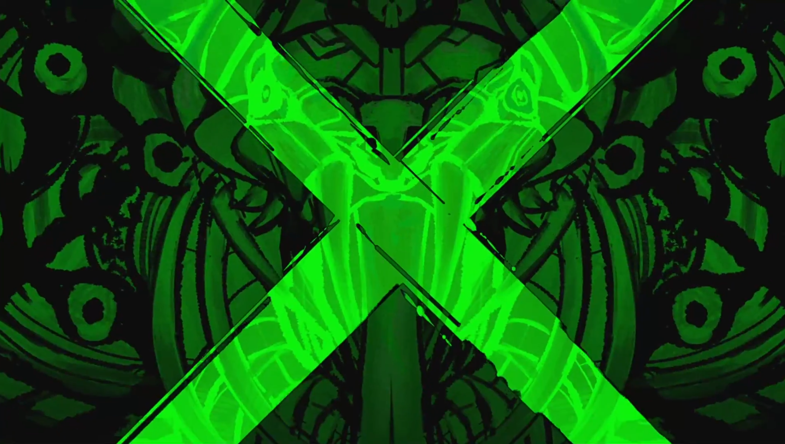

Nisemono Chuuihou
CV: Nao Toyama · 150P · Bookmark of Demise Project
Rare Music
I listen to lots of different music, but not all of it stays on the internet forever. So I keep copies of my favourites here.
Heads up: players start at 40% volume, but some tracks are loud.
CV: Nao Toyama · 150P · Bookmark of Demise Project

CV: NolanAnimations · SoundCloud

CV: Hebi · Higari Kirai